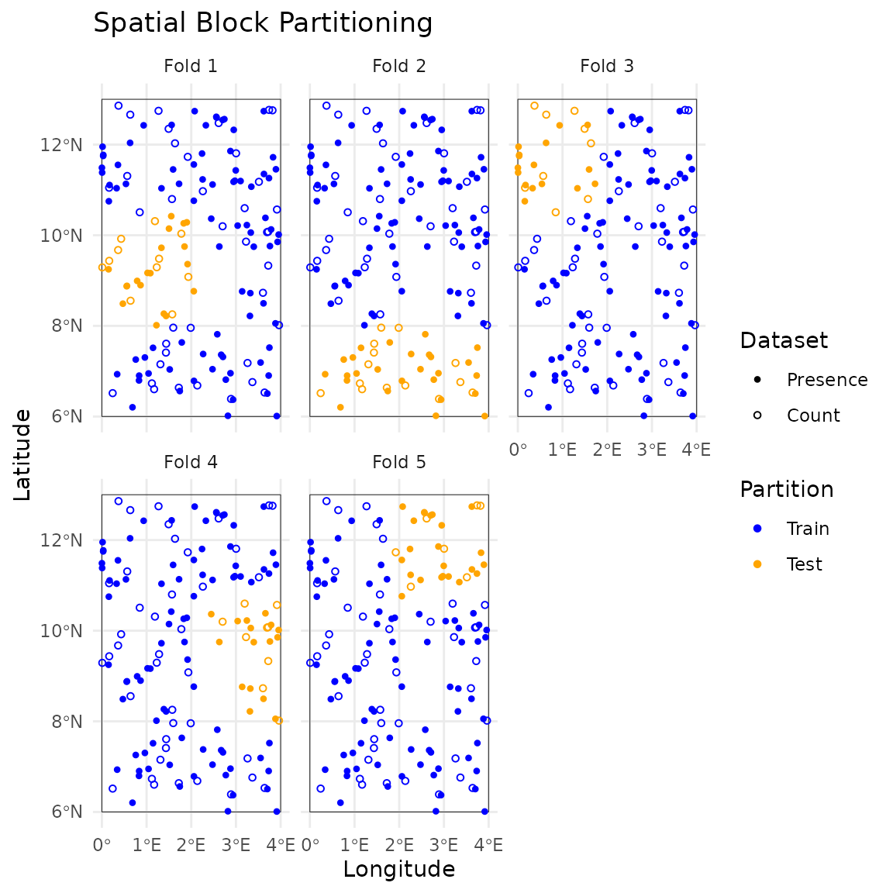
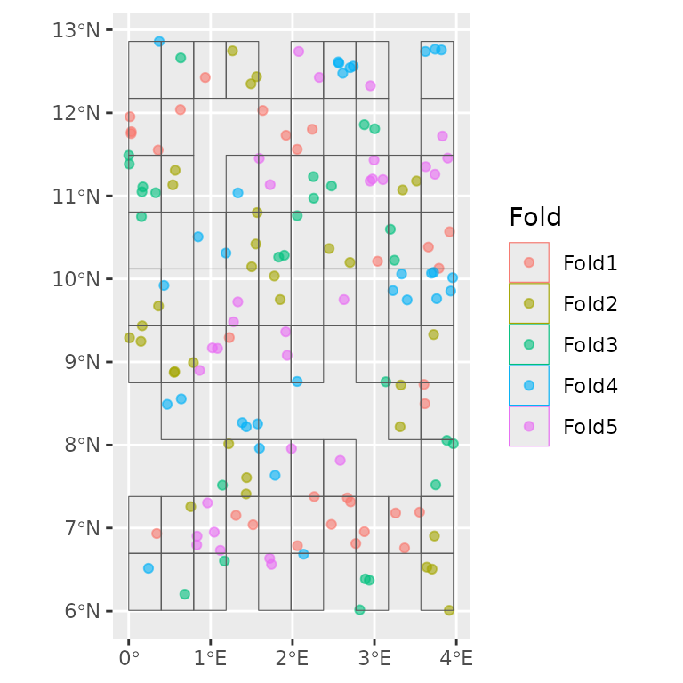
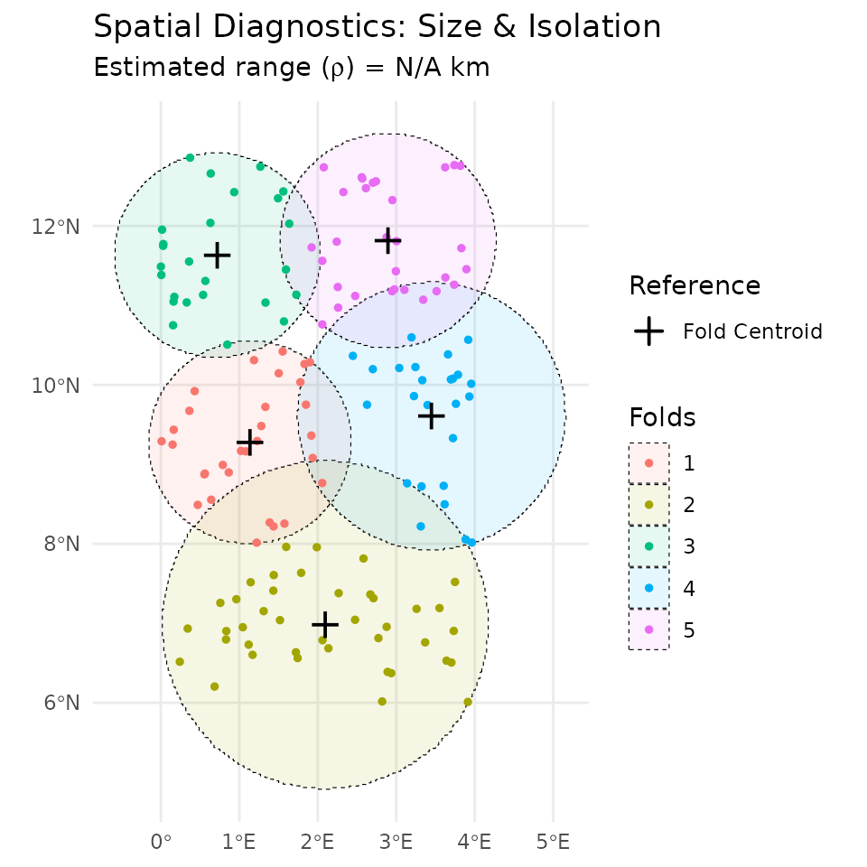
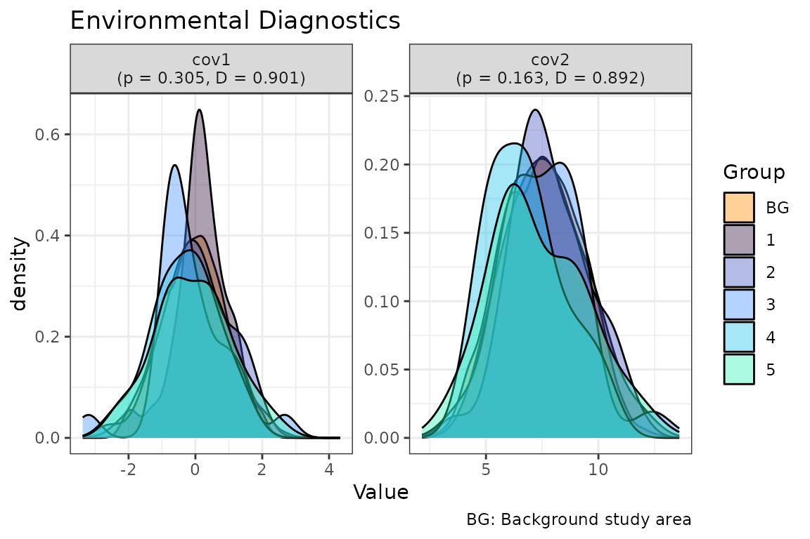
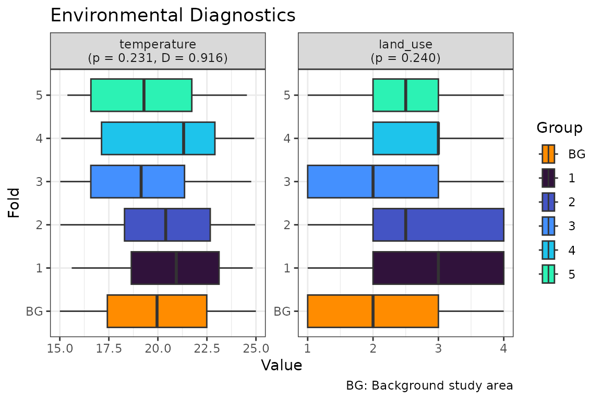

Get started with isdmtools
Akoeugnigan Idelphonse SODE
Generated on 2026-03-18
Source:vignettes/isdmtools.Rmd
isdmtools.RmdIntroduction
The integrated species distribution modelling (ISDM) is any
statistical approach that combine biodiversity data from different
sampling schemes with the purpose of correcting for biases or providing
an overall estimation of the species distribution based on multisource
evidence. This vignette should bridge the gap between “having spatial
data” and “being ready for modelling.” The fundamental philosophy of
isdmtools is to provide a standardised bridge between
diverse biodiversity spatial data sources and a robust spatial
cross-validation (CV) strategy for evaluating integrated species
distribution models (ISDMs). This tutorial will assist you through
preparing data and generating spatial folds — the essential first steps
before fitting an Integrated Species Distribution Model (ISDM).
Data Preparation
Let’s consider a simple scenario by generating two spatial datasets representing the presence and abundance of a given species within a designated study region. The purpose of this tutorial is to provide a simple introduction to the tool, as opposed to addressing a very complex scenario of spatially autocorreleted datasets.
# Simulate a list of presence-only and count data
set.seed(42)
presence_data <- data.frame(
x = runif(100, 0, 4),
y = runif(100, 6, 13),
site = rbinom(100, 1, 0.6)
) |> st_as_sf(coords = c("x", "y"), crs = 4326)
count_data <- data.frame(
x = runif(50, 0, 4),
y = runif(50, 6, 13),
count = rpois(50, 5)
) |> st_as_sf(coords = c("x", "y"), crs = 4326)
datasets_list <- list(Presence = presence_data, Count = count_data)
# Define the study region (e.g. Benin's boundary rectangle)
ben_coords <- matrix(c(0, 6, 4, 6, 4, 13, 0, 13, 0, 6), ncol = 2, byrow = TRUE)
ben_sf <- st_sf(
data.frame(name = "Region"),
st_sfc(st_polygon(list(ben_coords)),
crs = 4326
)
)
# Generate some continuous covariates
set.seed(42)
r <- rast(ben_sf, nrow = 100, ncol = 100)
r[] <- rnorm(ncell(r))
rtmp <- r
rtmp[] <- runif(ncell(r), 5, 10)
r <- c(r, rtmp + r)
names(r) <- c("cov1", "cov2")Spatial Data Partitioning
The partitioning of spatial data into spatial folds is a crucial step
in the process of model evaluation via blocked cross-validation, as it
assists in the reduction of spatial autocorrelation in the observations.
This, in turn, enables the estimation of a more realistic model
performance. In the following code chunks, we illustrate with
isdmtools two distinct blocking schemes for the purpose of
resampling the observed spatial data (Valavi et
al. 2018; Mahoney et al. 2023).
# Create the DataFolds object using the default method
folds <- create_folds(datasets_list, ben_sf, cv_method = "cluster")
#> train test
#> 1 120 30
#> 2 110 40
#> 3 125 25
#> 4 125 25
#> 5 120 30
# Visualize the folds with custom styling
plot(folds, nrow = 2, annotate = FALSE) +
scale_x_continuous(breaks = seq(0, 4, 1)) +
scale_y_continuous(breaks = seq(6, 13, 2)) +
theme_minimal() +
labs(title = "Spatial Block Partitioning")
# Create the DataFolds object using the `spatialsample` blocking engine
fold_ss <- create_folds(datasets_list, ben_sf, cv_method = "block")
# Using the native autoplot of `spatialesample` which shows only pooled data
ggplot2::autoplot(fold_ss)
# Folds summary
summary(fold_ss)
#> DataFolds Object Summary
#> ------------------------
#> Total observations: 150
#> Number of folds (k): 5
#> Datasets merged: Presence, Count
#>
#> Global Observations per Fold and Dataset:
#>
#> Presence Count Sum
#> 1 22 8 30
#> 2 18 14 32
#> 3 19 8 27
#> 4 16 15 31
#> 5 25 5 30
#> Sum 100 50 150
#>
#> Spatial Context: Study area polygon is defined (available for plotting).Folds Diagnostics
The isdmtools package has introduced various
diagnostic tools to perform supplementary analyses on the
quality of the spatial folds (or blocks) that were created in the
previous step. We distinguish between diagnostics in geographical and
environmental spaces as well as combined analyses. The geographical
fold diagnostics are performed using the check_folds()
method while the environmental fold diagnostic is achieved via
the check_env_balance() method. Depending on the spatial
blocking strategy used for data partitioning, both diagnostic analyses
can be combined into a unified framework. The following sections
introduces how diagnostic tools can be used to assess the validity of
spatial folds generated from mutisource data for blocked
cross-validation.
- Folds diagnostics in geographical space
This diagnostic strategy compute the maximum Euclidean distance between points with respect to the fold centroid on the one hand (i.e. the internal size) and the minimum distance between points within a specific fold with its nearest fold (i.e. the inter-block gap) on the other hand.
# Check spatial independence of folds using the default rho (N/A)
geo_diag <- check_folds(folds, plot = TRUE)
print(geo_diag)
#>
#> === isdmtools: Spatial Fold Diagnostic ===
#>
#> Internal Size (Max Distance to Fold Centroid):
#> Min. 1st Qu. Median Mean 3rd Qu. Max.
#> 140.6 141.7 148.5 169.0 185.9 228.1
#>
#> Inter-block Gap (Min Distance to Nearest Fold):
#> Min. 1st Qu. Median Mean 3rd Qu. Max.
#> 32.71 32.71 42.08 41.62 45.42 55.16
#> ==========================================
# Plot results
plot(geo_diag)
As the results illustrates, the inter-block gap is approximately 42 km in average. This indicates that there is no contiguous spatial folds from the selected blocking strategy, thereby supporting the hypothesis of no block leakage.
In the context of geographical fold diagnostics, should any
prior information on the spatial range be available from an exploratory
analysis, this can be used for the rho argument of the
check_folds()’ method. This value can then be compared to
the calculated inter-fold gap in order to ascertain whether folds are
independent. For instance, the
blockCV::cv_spatial_autocor() function can help derive
prior information on the spatial range (Valavi et
al. 2018). Additionally, if the correlation function is part of
Matérn family, the helper function
solve_practical_range() from our isdmtools
package can be utilised to derive the corresponding practical
range required for spatial diagnostics (see Sode et al. (2025) for further details). The
same procedure can be applied to a Bayesian analysis to check if the
posterior practical range estimated aligns with the spatial
geometry of the specified folds.
- Folds diagnostics in the environmental space
Another crucial aspect of blocked cross-validation strategy is to ensure that validation metrics reflect the integrated model’s ability to generalise across the species’ niche, rather than its proximity to training data. The analysis of spatial folds in the environmental space can allow this hypothesis to be assessed as nearly met before proceeding with the modelling process.
# Check environmental balance of folds
set.seed(42) # set this for background sample reproducibility
env_diag <- check_env_balance(folds,
covariates = r,
n_background = 5000
)
print(env_diag)
#>
#> === isdmtools: Environmental Balance Diagnostic ===
#> Significance (p > 0.05 = Balanced)
#> Overlap (D > 0.6 = Representative)
#>
#> Variable Type p_val Schoener_D
#> cov1 Continuous 0.3053 0.902
#> cov2 Continuous 0.1631 0.893
#> ==================================================
# Plot outputs
plot(env_diag)
As illustrated by the outputs, the Schoener D metric is greater than 0.6 for both covariates. This indicates that spatial folds exhibit significant overlap with the background area. Additionally, the p-value resulting from comparing the median values of the variables across the folds is greater than 0.05. This suggests that the environmental variables do not differ significantly between the blocks. Consequently, it can be hypothesised that the spatial blocks are environmentally representative and may be robust for the integrated model prediction and generalisation.
- Combined analysis
It is possible to combine both types of fold diagnostics in order to draw a unified conclusion. However, it should be noted that the applicability of both diagnostic tools is not universal across all the spatial blocking strategies covered in the package. Therefore, the most appropriate block diagnostic tool may be contingent on the selected blocking scheme and the geometry of resulting folds.
# Combined diagnostics
summarise_fold_diagnostics(geo_diag, env_diag)
#>
#> ==========================================
#> isdmtools: INTEGRATED FOLD SUMMARY
#> ==========================================
#>
#> Domain Metric Value Status
#> Geographic Avg Internal Distance (km) 168.970 Separated
#> Geographic Avg Inter-Fold Gap (km) 41.617 Separated
#> Environmental Median Overlap (D) 0.897 Balanced
#> Environmental Minimum p-value 0.163 Balanced
#>
#> ------------------------------------------
#> CONCLUSION: Folds are spatially independent
#> and environmentally representative.
#> ==========================================- Mixture of continuous and categorical variables
In practical application, we may have a mixture of continuous and categorical covariates (e.g. land cover). In this scenario, the Schoener D metric cannot be calculated for the categorical variables. The p-value for this type of variable is then derived from the Chi-square test based on the Monte Carlo approximation instead of the Kruskal Wallis test used for the continuous variables.
# Continuous (temperature) and categorical (land cover) variables
set.seed(42)
r_temp <- rast(ben_sf, nrow = 100, ncol = 100, val = runif(10000, 15, 25))
r_land <- rast(ben_sf, nrow = 100, ncol = 100, val = sample(1:4, 10000, TRUE))
levels(r_land) <- data.frame(ID = 1:4, cover = c("Forest", "Grass", "Urban", "Water"))
env_stack <- c(r_temp, r_land)
names(env_stack) <- c("temperature", "land_use")
# Run the test with 5000 background cells and use boxplot
env_mixed <- check_env_balance(
folds,
covariates = env_stack,
n_background = 5000,
plot_type = "boxplot"
)
print(env_mixed)
#>
#> === isdmtools: Environmental Balance Diagnostic ===
#> Significance (p > 0.05 = Balanced)
#> Overlap (D > 0.6 = Representative)
#>
#> Variable Type p_val Schoener_D
#> temperature Continuous 0.2311 0.909
#> land_use Categorical 0.2399 NA
#> ==================================================
# Plot outputs
plot(env_mixed)
# Combined diagnostics
summarise_fold_diagnostics(geo_diag, env_mixed)
#>
#> ==========================================
#> isdmtools: INTEGRATED FOLD SUMMARY
#> ==========================================
#>
#> Domain Metric Value Status
#> Geographic Avg Internal Distance (km) 168.970 Separated
#> Geographic Avg Inter-Fold Gap (km) 41.617 Separated
#> Environmental Median Overlap (D) 0.909 Balanced
#> Environmental Minimum p-value 0.231 Balanced
#>
#> ------------------------------------------
#> CONCLUSION: Folds are spatially independent
#> and environmentally representative.
#> ==========================================Data Extraction for Modelling
Once spatial folds are created, one can extract the data and see how it looks like right before it goes into an integrated modelling tool. You can access both ‘train’ and ‘test’ sets and their corresponding datasets as follows:
# Extract fold 1
splits_1 <- extract_fold(folds, fold = 1)
# Accessing the training and testing sets for the "Presence" source
head(splits_1$train$Presence)
#> Simple feature collection with 6 features and 1 field
#> Geometry type: POINT
#> Dimension: XY
#> Bounding box: xmin: 1.144558 ymin: 7.515971 xmax: 3.748302 ymax: 12.73826
#> Geodetic CRS: WGS 84
#> site geometry
#> 1 0 POINT (3.659224 10.38372)
#> 2 1 POINT (3.748302 7.520104)
#> 3 0 POINT (1.144558 7.515971)
#> 4 1 POINT (3.321791 8.722615)
#> 5 1 POINT (2.566982 12.59719)
#> 6 1 POINT (2.076384 12.73826)
head(splits_1$test$Presence)
#> Simple feature collection with 6 features and 1 field
#> Geometry type: POINT
#> Dimension: XY
#> Bounding box: xmin: 0.4699494 ymin: 8.489662 xmax: 1.899988 ymax: 10.28493
#> Geodetic CRS: WGS 84
#> site geometry
#> 1 1 POINT (1.830967 10.26256)
#> 2 1 POINT (1.021715 9.169121)
#> 3 1 POINT (1.849171 9.75053)
#> 4 1 POINT (0.4699494 8.489662)
#> 5 1 POINT (1.899988 10.28493)
#> 6 1 POINT (0.5548407 8.874446)Conclusion
Congratulations! You have successfully fused multi-source
biodiversity data and generated spatially independent partitions for
robust model validation. By using create_folds() and
appropriate folds’ diagnostic tools, you’ve ensured that your model
evaluation will account for spatial autocorrelation, providing a more
realistic estimate of predictive performance.
The isdmtools journey continues with model fitting and
comprehensive evaluation. Depending on your needs, we recommend the
following paths:
-
Model Fitting: Use the training data extracted via
extract_fold()to fit your models using modelling engines like inlabru, PointedSDMs, or standard generalised (additive) mixed models (GAMMs) tools which can support multisource spatial data. - Integrated Evaluation: Once predictions are obtained, evaluate the models with the testing set and analyse the outputs.
The advanced guide on ISDM Evaluation
Workflow covers model building with external tools, and the use of
isdmtools to perform model evaluation, suitability analysis
and mapping.